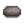
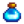
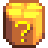

Tocón Gigante
| Tocón Gigante | |
 | |
 | |
| Dirección: | Bosque Tizón, entre el lago y el Rancho de Marnie |
| Residentes: | |
El Tocón Gigante está ubicado en el área norte del Bosque Tizón y el oeste del Rancho de Marnie.
Comienza como un árbol gigante sin atributos notables. Se convierte en el Tocón Gigante luego de que la Tormenta de Viento Fuerte derrumbe el árbol. Interactuar con el Tocón inicia la misión "El Tocón Gigante". Luego, se convierte en el hogar del Mapache, quien lo habita con su esposa y sus hijos a través del curso de su línea de misiones de búsqueda.
Línea de Misiones
Nota: Luego de la misión de "El Tocón Gigante", el resto no es una "misión" como tal, así como las del diario de misiones, más bien una serie de solicitudes interactivas, similares a las solicitudes del Oso de la basura.
Pre-habitación
Luego de que ocurra la Tormenta de Viento Fuerte, el Tocón resultante tendrá un "?", este contendrá un dialogo con el que se debe interactuar para empezar la misión "El Tocón Gigante", en la cual el jugador deberá reparar el Tocón utilizando 100 de madera noble.
Solicitudes del Mapache
El día después a la reparación del Tocón, un Mapache se mudará. Seguidamente, tendrá una serie de solicitudes de artículos, cada uno por una recompensa. Los artículos solicitados a menudo requerirán el uso de equipo artesanal, como el deshidratador, el ahumador de peces, y la envasadora.
Luego de completar una solicitud, una nueva solicitud se hará luego de 7 días, lo cual se podrá notar por la aparición de su esposa (y seguidamente, de sus hijos). Completando las 9 solicitudes, el jugador obtendrá el logro - "Buenos Vecinos". El jugador podrá continuar completando solicitudes adicionales por una recompensa. Los artículos solicitados siempre estarán relacionados ó serán obtenibles durante la estación en curso. Si una solicitud se genera en la última semana (días 22-28) de la estación, el Mapache solicitará artículos relacionados a la siguiente estación (por ejemplo, una solicitud generada el día 24 de primavera solicitará artículos de verano).
Primera Solicitud
| Primera Solicitud (2 artículos elegidos al azar, uno de cada grupo) | |||||||||||||||
|---|---|---|---|---|---|---|---|---|---|---|---|---|---|---|---|
| Trampa para cangrejos, Recolección | |||||||||||||||
| Ahumando un pez en un ahumador de peces | |||||||||||||||
| Uno de (ver Nota): | |||||||||||||||
Cada uno de los 7 peces de la trampa para cangrejos tiene la misma probabilidad de ser elegido (en todas las estaciones).
Los peces ahumados que se pueden obtener varían por estación.
 Primavera: Perca, Besugo, Siluro, Barbo, Pez fantasma, Platija, Sábalo
Primavera: Perca, Besugo, Siluro, Barbo, Pez fantasma, Platija, Sábalo Verano: Perca, Besugo, Siluro, Barbo, Pez fantasma, Platija, Sábalo, Trucha arcoíris, Tilapia, Salmonete, Atún
Verano: Perca, Besugo, Siluro, Barbo, Pez fantasma, Platija, Sábalo, Trucha arcoíris, Tilapia, Salmonete, Atún Otoño: Perca, Besugo, Siluro, Barbo, Pez fantasma, Tilapia, Carpa de medianoche, Salmón
Otoño: Perca, Besugo, Siluro, Barbo, Pez fantasma, Tilapia, Carpa de medianoche, Salmón Invierno: Perca, Besugo, Siluro, Barbo, Pez fantasma, Salmonete, Atún, Cachuelo, Carpa de medianoche
Invierno: Perca, Besugo, Siluro, Barbo, Pez fantasma, Salmonete, Atún, Cachuelo, Carpa de medianoche
En otoño, el salmón es doblemente probable de ser elegido sobre el resto de los peces, el resto son igualmente probables entre sí. En primavera, verano e invierno, todos los peces son igualmente probables para ser elegidos.
Segunda Solicitud

La fruta seca y las mermeladas que pueden ser elegidas varían por estación.
- Primavera: Higo chumbo, Albaricoque, Cereza, Fresa, Coco
- Verano: Higo chumbo, Arándano, Chile, Naranja, Melocotón, Coco, Baya especiada
- Otoño: Higo chumbo, Manzana, Grosella, Granada, Mora, Coco, Ciruela salvaje
- Invierno: Higo chumbo, Fruta de cristal, Coco, Melón de polvo
En invierno, la fruta de cristal y el melón de polvo son el doble de probable de ser elegidos, a comparación de los higos chumbo y los cocos, los cuales son igualmente probables. En primavera, verano y otoño, todas las frutas son igual de probables de ser elegidas.
Tercera Solicitud
| Tercera Solicitud (2 artículos elegidos al azar, uno de cada grupo) | |||||||
|---|---|---|---|---|---|---|---|
| Secando setas en un deshidratador | |||||||
| De cualquier Gallina, Pato, o Avestruz | |||||||
| Las minas, ya sea rompiendo cajas o arando la tierra. | |||||||
| Pesca, Botín de monstruos. | |||||||
|  Sombrero de Mapache (1) | |||||||
Las setas secas que pueden ser elegidas varían por estación. Estas setas son igualmente probables de ser elegidas en cada estación.
- Primavera: Seta lila, Seta común, Colmenilla
- Verano: Seta lila, Seta común
- Otoño: Seta lila, Seta común, Chantarela
- Invierno: Seta lila, Seta común
Cualquier huevo (exceptuando el huevo de dinosaurio) puede ser usado para completar la solicitud de 5 huevos.
Cuarta Solicitud
| Cuarta Solicitud (2 artículos elegidos al azar, uno de cada grupo) | |||||||||||||||||||||
|---|---|---|---|---|---|---|---|---|---|---|---|---|---|---|---|---|---|---|---|---|---|
|
Insertando un cultivo u objeto recolectable en una envasadora. | ||||||||||||||||||||
|
Colocando un cultivo u objeto recolectable en un barril | ||||||||||||||||||||
Los encurtidos y zumos que pueden ser elegidos varía entre estaciones.
- Primavera: Coliflor, Judía verde, Col rizada, Patata, Rábano silvestre, Diente de león, Zanahoria
- Verano: Maíz, Rábano, Tomate, Zanahoria cavernaria, Calabaza amarilla
- Otoño: Brócoli, Col china, Berenjena, Calabaza
- Invierno: Ñame nival, Raíz invernal, Zanahoria cavernaria
La Zanahoria, Calabaza amarilla y Brócoli son el doble de probable de ser elegidos sobre otros vegetales en su respectiva estación, los demás tienen las mismas probabilidades. En invierno, todos los vegetales son igualmente probable de ser elegidos.
Quinta Solicitud
| Quinta Solicitud (2 artículos elegidos al azar) | |||||||||||||||||
|---|---|---|---|---|---|---|---|---|---|---|---|---|---|---|---|---|---|
 |
Obtenida de los árboles musgozos. | ||||||||||||||||
| Se puede encontrar arando un lugar de artefacto en el Pueblo Pelícano, o de un cofre del tesoro, o un cofre artefacto. Puede ser encontrado también arando la tierra en las minas o en la caverna calavera. | |||||||||||||||||
| Pescando durante todas las estaciones, en cualquier ubicación, usando ya sea una caña de pescar o una trampa para cangrejos. También se puede encontrar en un cubo de basura | |||||||||||||||||
| Botín de las babas | |||||||||||||||||
| Botín de murciélagos (cualquier variante a excepción del Murciélago de iridio) | |||||||||||||||||
| Minería o Pesca | |||||||||||||||||
| Minería o Pesca | |||||||||||||||||
| Minería o Pesca | |||||||||||||||||
| Artículo recolectable encontrado todo el año en sección de las pozas de marea en la playa | |||||||||||||||||
| Artículo recolectable encontrado todo el año en sección de las pozas de marea en la playa | |||||||||||||||||
| Botín de cualquier insecto de cueva. | |||||||||||||||||
| Se obtiene de piedras de diamante o piedras de gema en las minas, caverna calavera, cantera, o en la mazmorra del volcán. | |||||||||||||||||
| Se obtiene de piedras de topacio o piedras de gema en las minas. | |||||||||||||||||
| Pescando en las minas en el piso 20 y piso 60. | |||||||||||||||||
Sexta Solicitud en adelante
| Sexta Solicitud en adelante | |||
|---|---|---|---|
| Los requerimentos serán los mismos que alguna de las 5 solicitudes anteriores, elegidas al azar. | |||
Uno de (al azar):
| |||
Todas las recompensas son igual de probables. Un artículo no enviado solo se obtendrá si y solo si el jugador ha encontrado al menos 100 nueces de oro y no ha completado la colección de envíos (fuera de las huevas y productos artesanales). Si este requisito no es cumplido, 5 cajas misteriosas serán entregadas en su lugar.
Nota
Para la primera solicitud, el tipo de semilla de recompensa depende enteramente de la estación y la fecha en la que el jugador completa la solicitud. Esto también aplica a la posible recompensa de semillas para la sexta solicitud en adelante.
| Desde | Hasta | Semilla | Descripcion |
|---|---|---|---|
| Plántalas en primavera. Crece en 3 días. | |||
| Plántala en verano. Tarda 6 días en crecer, sigue produciendo después de la primera cosecha. | |||
| Plántalo en otoño. Tarda 8 días en madurar, continúa produciendo después de la primera cosecha. | |||
| Este melón especial crece en el invierno. Tarda 7 días en madurar. |
Tienda de la señora Mapache
Luego de completar la Primera Solicitud del Mapache, podrás interactuar con su esposa para acceder a su tienda. Su tienda no utiliza oro, sino más bien trueques por otros artículos.
Su tienda inicialmente ofrece todas las semillas de los lugares de artefacto, pero cada ítem obtenido como recompensa de las primeras 5 solicitudes también será agregado a la tienda una vez completadas.
| Imagen | Nombre | Descripción | Precio |
|---|---|---|---|
| Semillas de zanahoria | Plántalas en primavera. Crece en 3 días. | ||
| Semillas de calabaza amarilla | Plántala en verano. Tarda 6 días en crecer, sigue produciendo después de la primera cosecha. | ||
| Semillas de brócoli | Plántalo en otoño. Tarda 8 días en madurar, continúa produciendo después de la primera cosecha. | ||
| Semillas de melón de polvo | Este melón especial crece en el invierno. Tarda 7 días en madurar. | ||
| Diario del Mapache | Las malezas tienen más posibilidades de producir semillas mixtas. (Disponible después de la Segunda Solicitud) |
||
| Sombrero de Mapache | Un sombrero clásico de los viejos tiempos fronterizos. (Disponible después de la Tercera Solicitud) |
||
| Semillas variadas | Aquí hay un poco de todo. ¡Plántalas y a ver qué sale!. (Disponible después de la Cuarta Solicitud) |
||
| Semilla de caoba | Planta esto en tu granja para que crezca un árbol de caoba. (Disponible después de la Cuarta Solicitud) |
||
| Tanque de jungla | Puede colocarse dentro de casa. (Disponible después de la Quinta Solicitud) |
||
| Polvo de hadas | Espolvorea sobre barriles, hornos y otros equipos de refinería para recibir al instante el producto. (Disponible después de la Sexta Solicitud) |
 Sirope místico (1) | |
|  | Caja misteriosa de oro | Son similares a las Cajas misteriosas pero ofrecen mejores recompensas. (Disponible después de la Sexta Solicitud; Se debe haber obtenido previamente la Maestría de Recolección) |
|
| Caramelo mágico | Un raro y poderoso caramelo preparado con la energía de un fragmento prismático. (Disponible después de la Sexta Solicitud; Se debe haber obtenido previamente la Maestría de Recolección) |
Historial
- 1.6: Introducido.
- 1.6.3: Se incrementó el número de alas de murciélago y carne de insecto solicitadas de 10 a 20.
- 1.6.4: Se agregó el trueque utilizando cajas misteriosas y cajas misteriosas doradas. Se incrementó la recompensa del Mapache de cajas misteriosas de 4 a 5. Se agregó una cinemática especial para cuando se ha alcanzado el tamaño máximo de la familia Mapache. Se corrigió el error en multijugador en el que era posible que solamente el primer jugador que repare el Tocón complete la misión de "El Tocón Gigante", evitando que otros jugadores progresen en ella.
- 1.6.6: Añadido trueque de carbón por semillas de caoba. Se corrigió el error donde el Mapache podría desaparecer durante una cinemática en multijugador.
- 1.6.9: Se corrigió el error en el que la solicitud del Mapache aceptaba cualquier variación del producto artenasal solicitado.
| Edificios | ||
|---|---|---|
| Tiendas | Carpintería • Carro Ambulante • Casa en ruinas • Casino • Clínica de Harvey • Comerciante del desierto • Comerciante isleño • Gremio de aventureros • Habitación de nueces del Señor Qi • Herrería • MercaJoja • Oasis • Puesto de helados • Rancho de Marnie • Salón Fruta Estelar • Tienda de pesca • Tienda local Pierre's • Torre del Mago | |
| Casas | Cabaña de Elliott • Cabaña de Leah • Calle del Río, 1 • Calle del Río, 2 • Camino del Sauce, 1 • Camino del Sauce, 2 • Caravana • Carretera de la Montaña, 24 • Casa de campo • Casa de campo de la isla • Mansión del alcalde • Tienda de campaña | |
| Edificios de granja | Granja | Cabaña • Cabaña (Multijugador) • Corral • Criadero de babas • Cuadra • Cuenco para mascotas • Establo • Estanque de peces • Invernadero • Molino • Pozo • Silo |
| Especial | Cabaña junimo • Obelisco de granja • Obelisco del desierto • Obelisco marino • Obelisco terrestre • Obelisco de la Isla • Reloj de oro | |
| Otros edificios | Almacén de Joja • Cabaña de la Bruja • Caseta del perro • Centro Cívico • Cine • Museo • Oficina de campo de la isla • Spa | |